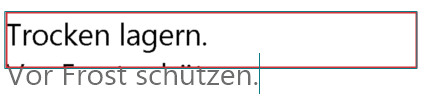
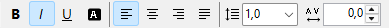
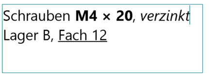

Artistic and paragraph text
A text is either an artistic text (one line, the box follows the text) or a paragraph text (several lines that wrap in their box). You type directly on the label and see what will be printed. You set everything else in the settings on the right.
-
Type on the label
Double-click a text to edit it: the cursor goes where you double-clicked. On a selected text, F2, Enter, Edit text (F2) on the right, or just typing work too; the cursor then goes to the end. A new text is only selected at first, so you can move it into place; typing on it then replaces its placeholder "Text".

While you edit, the text has a thin frame without handles; you move or resize it afterwards. The status bar says "Editing text – Esc or a click beside it ends." Esc, a click beside the text or another tool ends editing, and your changes stay. A text that you left empty is removed.
Fields such as
{date}show their code in a light grey box while you edit, their value again afterwards. Edit > Undo takes back the last step while you edit (a word, a format, a paste), and the whole edit at once afterwards. -
Artistic text
The Artistic text tool or Insert > Artistic text. The box always fits the text. Drag a handle to make the text larger or smaller; the opposite side stays where it is. Or type the Size (pt).
Enter stops editing here; pasted line breaks become spaces.
-
Paragraph text
The Paragraph text tool or Insert > Paragraph text. You set the box with the handles; the text wraps at its edge at its font size. A word longer than a line breaks between letters.
At the top, in the toolbar, you align the lines (Align text left, Centre text, Align text right, Justify) and choose the Line spacing: 1.0, 1.15, 1.5, 2.0 or your own value from 0.5 to 3. Justified, the wrapped lines reach both edges of the box; the last line of a paragraph stays left, as in Word.
Enter starts a new paragraph.
A text that doesn't fit the box is cut off at the box. On the screen the box then gets a red edge, and a red note appears on the right. While you edit, the cut-off lines show light grey below the box, so you see what you type there; they are never printed.

View > Show overflow while editing turns this off: the text then scrolls inside the box to the cursor's line.
-
Words in their own format
In artistic and paragraph text single words can be bold, italic, underlined, white on black, spaced out or in another font or size. Select them on the label while you edit and press Ctrl + B, I or U, or click B, I, U or Invert in the toolbar at the top, or change the Letter spacing (pt) there. You change the Font and Size (pt) on the right; a line there says what they apply to.


With nothing selected, the formats apply to what you type next. When the text isn't being edited, the settings apply to the whole text, and so do the buttons. Where the selected words differ, font, size and letter spacing stay blank, and B, I, U or Invert are hatched (partly). A click formats the whole selection, the next one removes the format everywhere in it.
Text pasted from Word or WordPad keeps its formats; plain text takes the format at the cursor. An artistic text stays one line: pasted line breaks become spaces. The handles of an artistic text make every word larger or smaller in proportion. Kind keeps the words' formats both ways.
-
Switch between the two
Kind switches between Artistic text and Paragraph text. A paragraph text becomes one line (line breaks become spaces), an artistic text becomes a paragraph text in a box around its text.
-
Font
Font and Size (pt) are on the right. In the toolbar at the top are B, I, U, Invert and the Letter spacing (pt) from −5 to +20; they work for both kinds, while you edit on the selected characters. Invert prints the text white on black: White on black.
Without a selected text the buttons are grey. For an artistic text the alignment and the line spacing are grey, as it is one line. Point at a button to see its key.
-
Date and time
Insert field ▾ adds a field at the cursor (at the end when the text isn't being edited) that is filled in whenever the label is shown or printed:
{date}- today's date
{date+30}- the date in 30 days;
{date-1}is yesterday {time}- the time
{date:yyyy-MM-dd}- with a format of your own after the colon, e.g.
{date+7:dd.MM.yy}or{time:HH:mm}
Without a format, the date and time look as in your Windows settings.
{{and}}print single braces. Example for a freezer label: "Frozen {date} – use by {date+90}".Fields also work in the content of barcodes and QR codes.